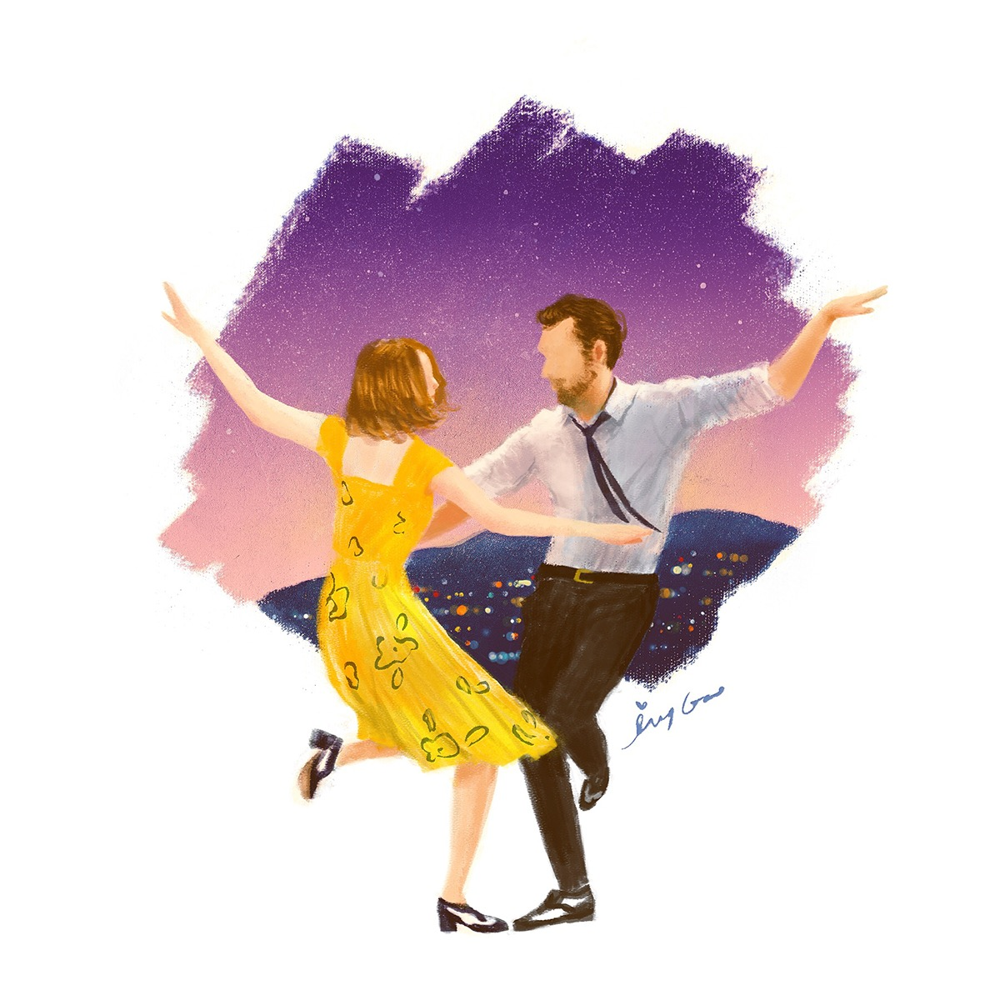

La La Land (2016)
A jazz musician and an aspiring actress fall in love while pursuing their dreams in Los Angeles.
Rating: 4.5/5. We enjoyed this movie because of the cinematography and the fun musical scenes throughout the movie.
A collection of movies that blend fantasy with other genres.
Created By: Zoey and Aabha
Aabha: Hi I'm Aabha! I'm an incoming freshman at the University of Maryland, studying computer science.
I love reading and cooking, so I enjoy making snacks for when I watch movies!
Zoey: Hi I’m Zoey! I’m an incoming freshman at the University of Maryland, also studying computer science.
I love photography and videography, which is why I love watching movies for fun!
A jazz musician and an aspiring actress fall in love while pursuing their dreams in Los Angeles.
Rating: 4.5/5. We enjoyed this movie because of the cinematography and the fun musical scenes throughout the movie.
A mute woman falls in love with a mysterious aquatic creature in a high-security government laboratory.
Rating: 3.5/5. We enjoyed the plot of this movie and liked how it includes both romance and action in a dystopian setting.
A dark fantasy film set in post-Civil War Spain, where a young girl escapes into a mythical labyrinth filled with strange creatures, seeking to fulfill her destiny.
Rating: 2.5/5. We thought this movie had an interesting and mythical plot, but the creatures itself look disturbing.
A man recounts the fantastical stories of his father's life, filled with mythical creatures and larger-than-life adventures.
Rating: 4/5. We thought this movie had an interesting journey to follow, and the songs were well made too.

A man is born with the condition of aging backward, leading to a unique and magical exploration of life, love, and time.
Rating: 3/5. We thought that the plot of this movie was interesting and heartfelt, but pretty sad.
La La Land: “La La Land illustration” by Ivy Gao https://www.behance.net/gallery/49088627/La-La-Land-illustration
Big Fish: “Big Fish Scene” by Chorkung https://www.artstation.com/artwork/xzmGzX
The Shape of Water: "The Shape of Water fan art" by @el_faconator https://www.reddit.com/r/GuillermoDelToro/comments/o2xu3r/just_a_little_fanart_i_made_of_the_shape_of_water/
Pan's Labyrinth: “Pan’s Labyrinth Movie Poster” by Dr3amtracerCc https://www.deviantart.com/dr3amtracercc/art/pan-s-labyrinth-movie-poster-166304110
The Curious Case of Benjamin Button: “The Curious Case of Benjamin Button” by 민 정아 https://www.behance.net/gallery/54798381/The-Curious-Case-of-Benjamin-Button?tracking_source=search_projects|the+curious+case+of+benjamin+button&l=2